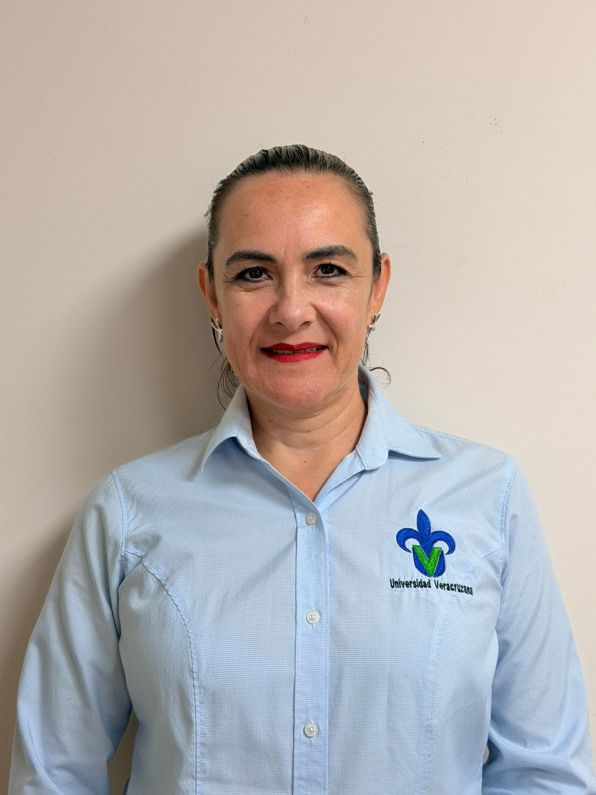
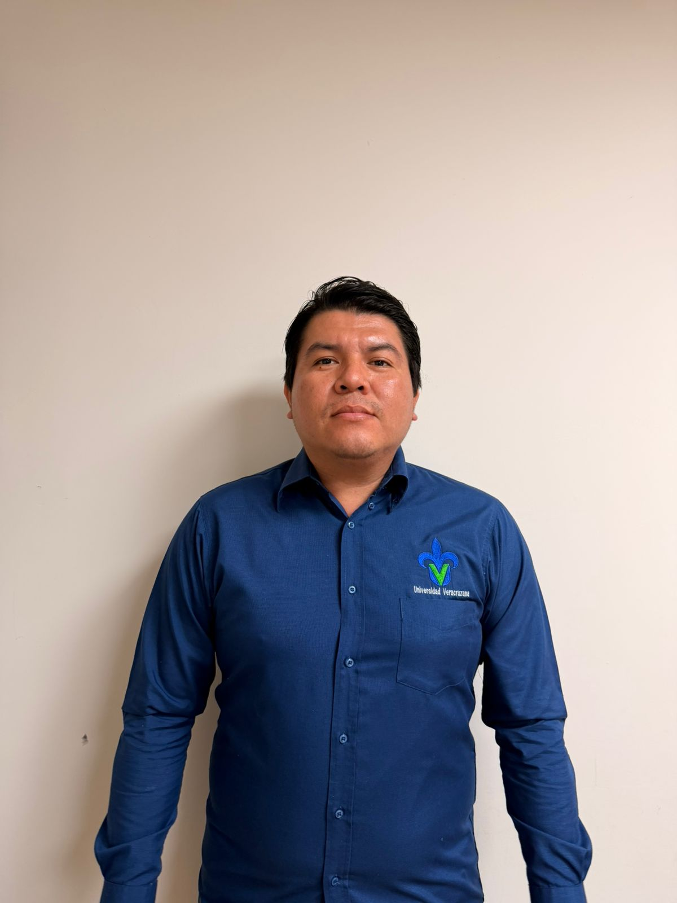
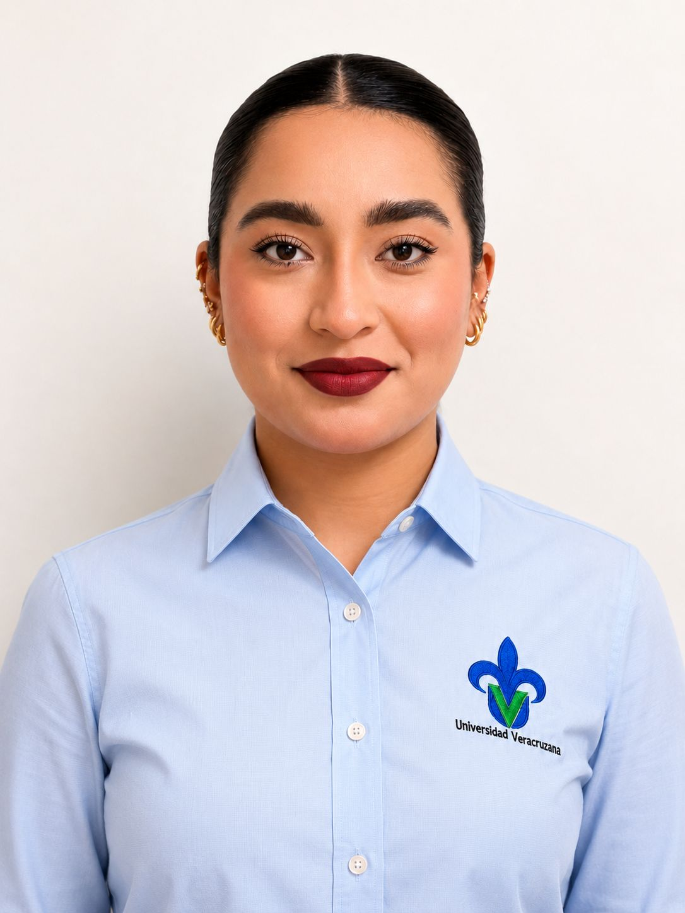
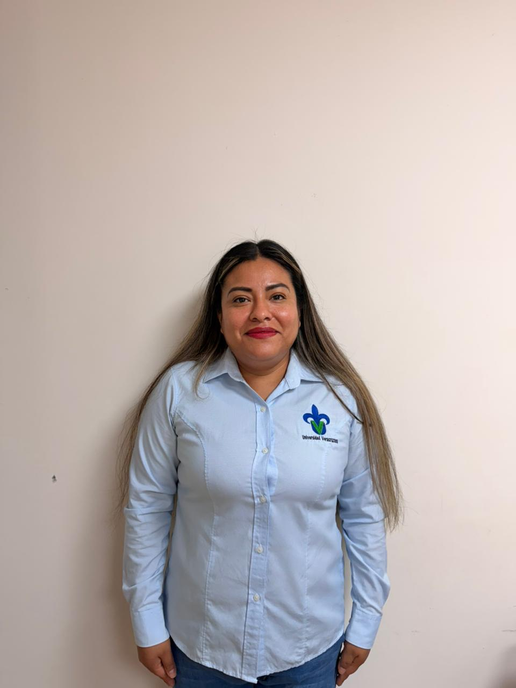

Mtra. Yadira del Carmen Rosales Ruiz
Coordinadora provisional
Titular
Jefa de Departamento de Transparencia
Jefa

L.A.E. Mayra Arlem Escudero Pérez
Analista

Mtro. Ricardo Amaro Santos
Jefe de Departamento de Acceso a la Información
Jefe

Lic. Estrella Ovando Diaz
Gestor normativo
Mtra. Elizabeth Ramzahuer Villa
Oficial de Proteción de Datos Personales
Oficial

Lic. Brenda Vanessa Martínez Hernández
Analista normativo